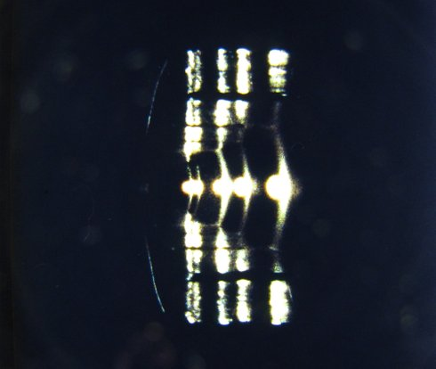
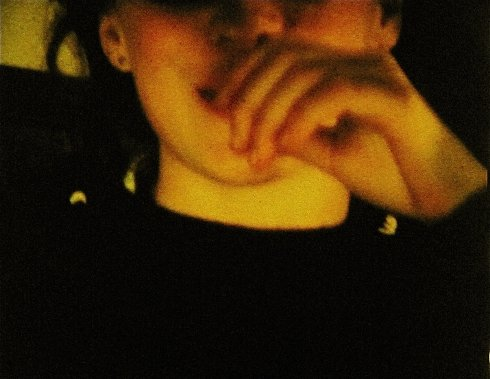
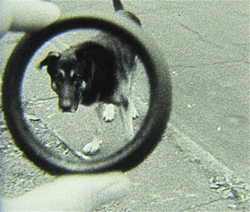
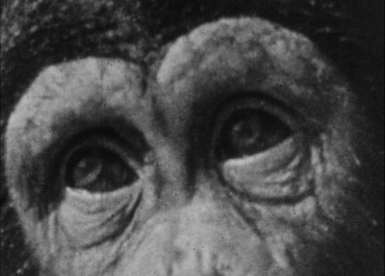
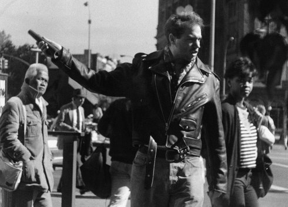
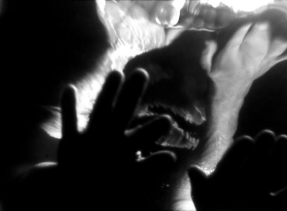
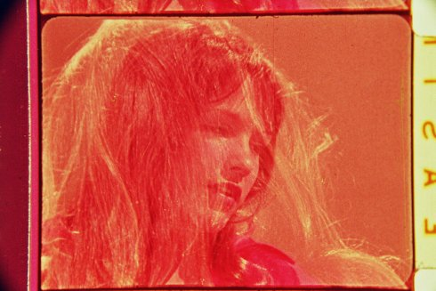
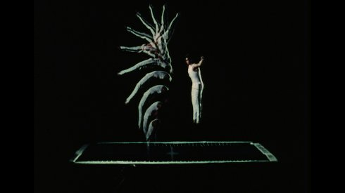

Artist in focus
OneUSA, AT 1978 - 2010 2 min | ohne Dialog | 35mm I made this film for the first film class Keith Sanborn taught, when he was a graduate student working with Hollis Frampton, using one roll of Super 8 film, without moving the camera. A kind of poetic/cinematic one-liner. It is in tune with the structuralist spirit of the day. (Eve Heller) |
Self-Examination Remote ControlUSA, AT 1981 - 2010 5 min | Englisch | 35mm A fragile Super 8 self-portait rediscovered on 35mm, made by a struggeling nineteen year old discontented with the pseudo-Brakhagean spectacle presented by her fellow students at the end of the 1970´s. |
JuiceAT, USA 1982 - 2010 4 min | ohne Dialog | 35mm A slow motion blow-up to 35mm foregrounds the kinetic serendipity of a handhold portrait shot in 1980 and entirely edited in-camera. |
Last LostUSA 1996 14 min | ohne Dialog A hypnotic parable about coming of age in a shifty world of slipping terms, "found" in the optically mesmerized fragments of a home market movie about a chimpanzee`s high adventures at Coney Island. |
Astor PlaceUSA 1997 10 min | ohne Dialog Passersby at Astor Place in New York City speak silent volumes as they move by the mirrored surface of a diner window.) |
Her Glacial SpeedUSA 2001 4 min | ohne Dialog | 16mm Unwitting constellations of meaning rise to a surface of understanding at a place outside of worldly time. |
Behind This Soft EclipseUSA 2004 10 min | ohne Dialog | 16mm I was imagining a collaboration of parallel worlds or a kind of doubled consciousness. The body of the film depends on a spine of interlocking contrasts in the form of negative and positive space, day and night shots, under and above water elements. (Eve Heller) |
Ruby SkinUSA 2005 4 min 30 sek | Englisch | 16mm A found footage film that taps into the poetic tradition of the language cut-up, while taking filmic advantage of the 26-frame displacement between sound and image inherent to the optical soundtrack system of 16mm film |
Creme 21AT, USA 2013 10 min | Englisch | 16mm auf HD I made this film for the first film class Keith Sanborn taught, when he was a graduate student working with Hollis Frampton, using one roll of Super 8 film, without moving the camera. A kind of poetic/cinematic one-liner. It is in tune with the structuralist spirit of the day. (Eve Heller) |